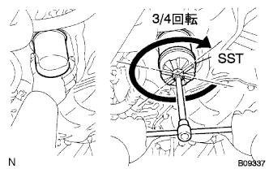

Oil filter SUB-ASSY installation |
| 1. Oil filter SUB-ASSY installation |
Remove dirt and foreign substances on the mounting surface on the engine side.
Apply a small amount of engine oil to the O -ring of the new oil filter.
|  |
Attach by hand until the O -ring hits the mounting surface.
Use SST to increase by 3/4 revolutions.
| 2. Installation of oil panderen plug |
Attach an oil pander plug via a new gasket.
| 3. Engine oil replenishment |
| 4. Oil leak inspection |